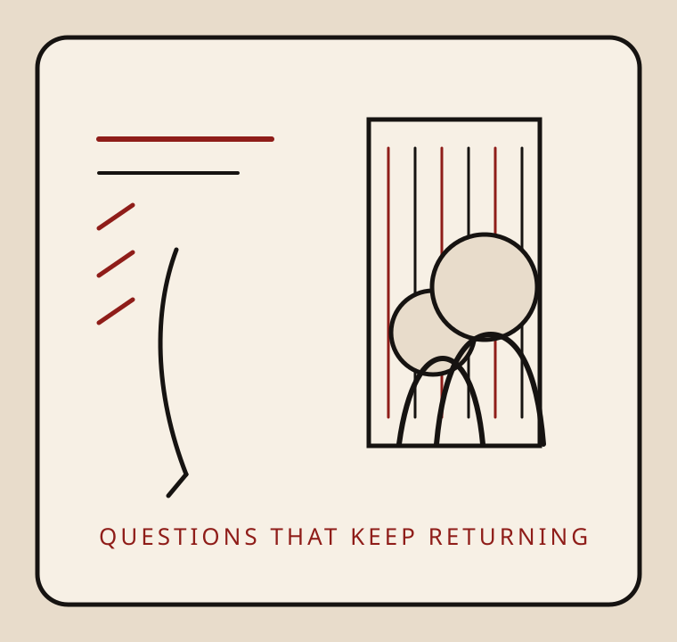

Literary Editing
Reading for selection at Miracle Monocle sharpened an interest in voice, precision, and the editorial decisions that help strong writing hold together.

Reading for selection at Miracle Monocle sharpened an interest in voice, precision, and the editorial decisions that help strong writing hold together.
Study in philosophy and participation in ethical leadership conferences continue to shape how they think about responsibility, argument, and public life.
Research and programming focused on foster youth and hidden student populations ground their work in questions of belonging, opportunity, and institutional care.
The Ripple Effects Project brought writing into conversation with candid photography, wildlife observation, and the quiet details that give nonfiction its texture.